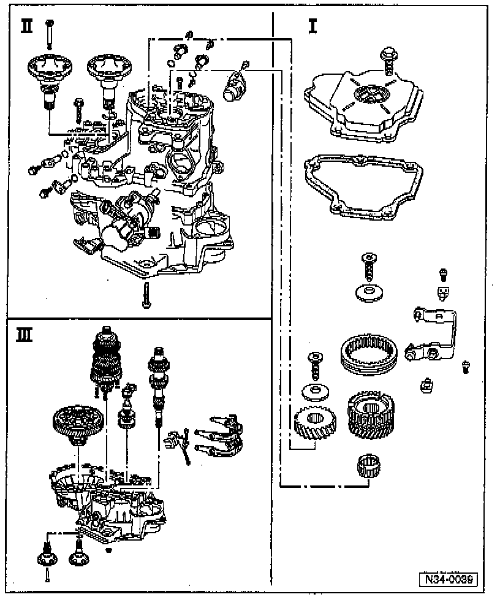

Disassembly/Assembly Overview

- Disassembly and assembly sequence, refer to Disassembly/Assembly Procedures.
- For Component Notes and Information, refer to:
I - Transmission housing cover and 5th gear
II - Transmission housing and selector mechanism
III - Input shaft, output shaft, differential, and shift forks